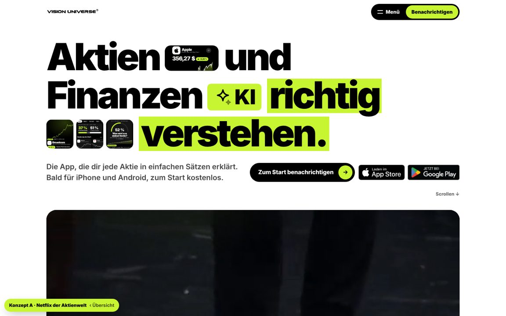
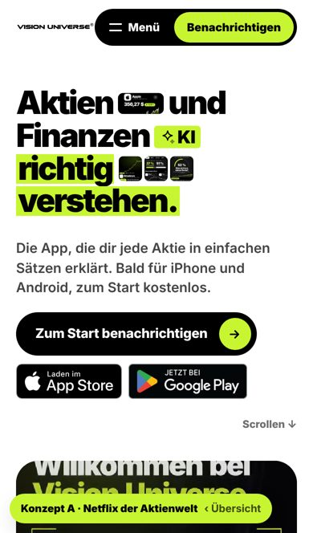
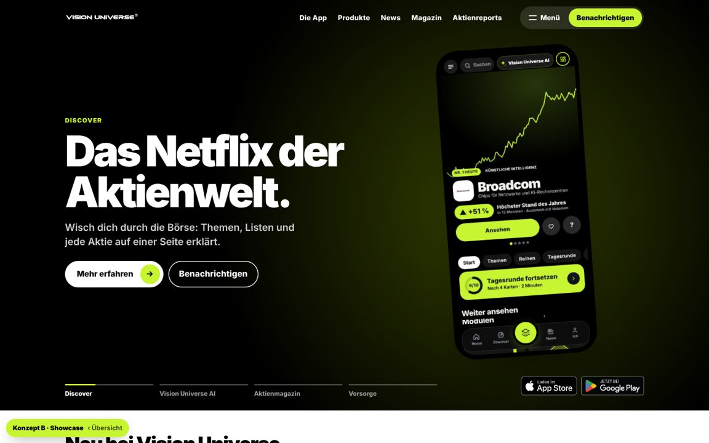
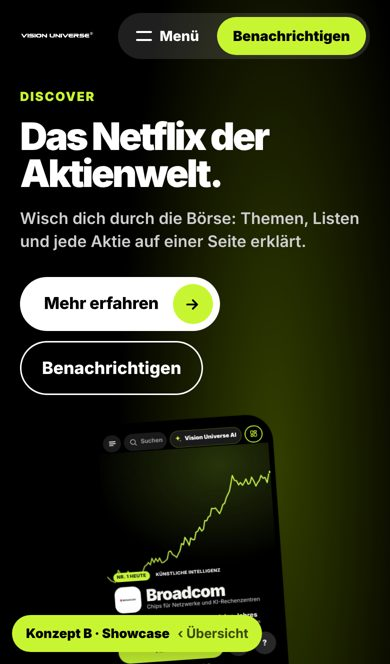

Konzeptpräsentation · 19.11.2026 · nur Vorschau, nicht live
Weniger scrollen. Mehr Wow.
Heute: zwei Menüleisten und zwölf lange Kapitel, rund 20 Bildschirmhöhen. Beide Konzepte bringen die Seite auf vier bis fünf Bildschirmhöhen – mit Reihen zum Wischen statt Kapiteln und einem Menü wie bei DLS: eine kleine Pille „Menü | Benachrichtigen“, die eine schwarze Karte aufklappt.


EmpfehlungKonzept A · Netflix der AktienweltHell, ruhig, nah an DLS.Riesen-Überschrift mit eingebetteten App-Bildern, darunter ein Film.Vier Reihen zum Wischen: Die App · Heute neu · In 30 Sekunden erklärt · Anmeldung.Konzept ansehen

AlternativeKonzept B · ShowcaseFilmisch, nah an Rockstar.Großes Karussell oben: Discover, Vision Universe AI, Aktienmagazin, Vorsorge – schaltet von selbst weiter.Darunter Aufmacher mit Liste, eine Reihe mit allen Bereichen und die Anmeldung.Konzept ansehenSo vergleichst du
- Beide Konzepte am iPhone und am Laptop öffnen.
- Menü oben rechts antippen.
- In den Reihen zur Seite wischen (Desktop: Pfeile).
- Bei B das Karussell ein paar Sekunden laufen lassen.
Frühere Varianten
S2 Startseite zweispaltig · L2 Landingpage zweispaltig · S1 · S3 · S4 · S5 · L1 · L3 · L4 · L5
Aktuell live: Startseite · Landingpage